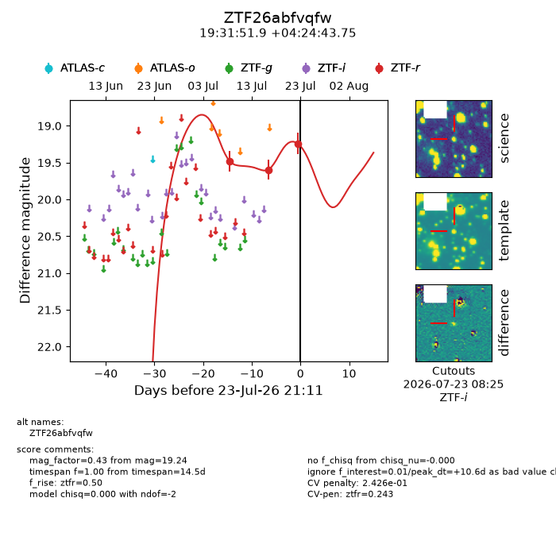
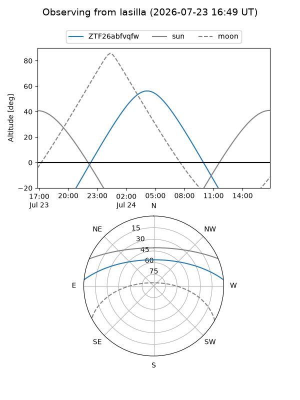
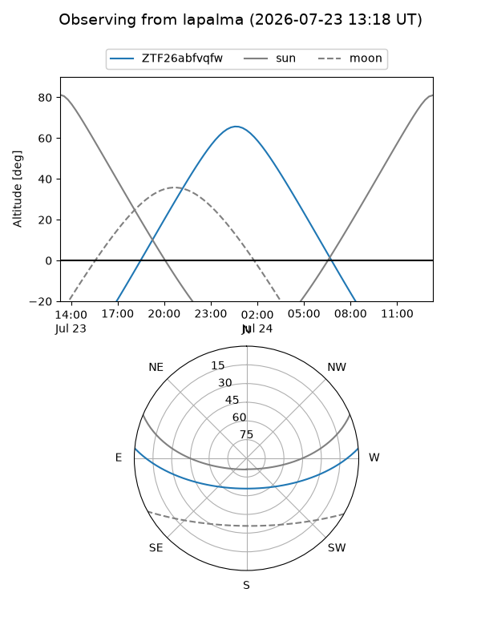
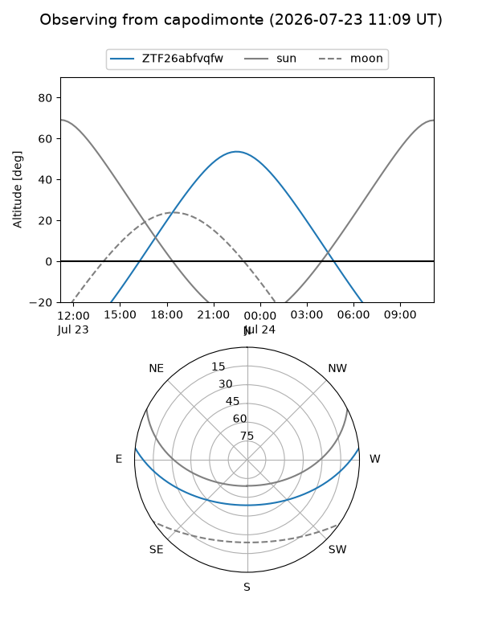
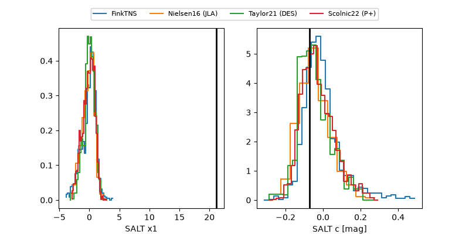

ZTF26abfvqfw
Target ZTF26abfvqfw at 2026-07-23 21:14
Aliases and brokers:
FINK-ZTF: ztf.fink-portal.org/ZTF26abfvqfw
Lasair-ZTF: lasair-ztf.lsst.ac.uk/objects/ZTF26abfvqfw
ALeRCE-ZTF: alerce.online/object/ZTF26abfvqfw
Direct TNS query: direct search
alt names
ZTF26abfvqfw (ztf,fink_ztf)
Coordinates:
equatorial (ra, dec) = 292.9661,+4.41215
equatorial (HMS+DMS) = 19:31:51.87,+04:24:43.75
galactic (l, b) = (41.5204,-6.92869)
Flags:
peak dt: +10.6
likely cv: !!
Photometry:
last ztfr=19.24
3 ztfr detections
Lightcurve

Visibility



Additional plots
